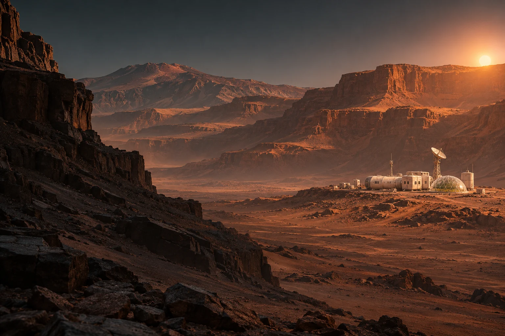

Strategická desková hra
MARSTERAFORMACE
Veď svou korporaci a proměň rudou planetu v nový domov. Každý projekt zanechá na Marsu stopu.
1–5 hráčů
90–120 minut
208 základních projektů
Mapa Tharsis
Karetní archiv
Vybrané projekty
Karetní archiv